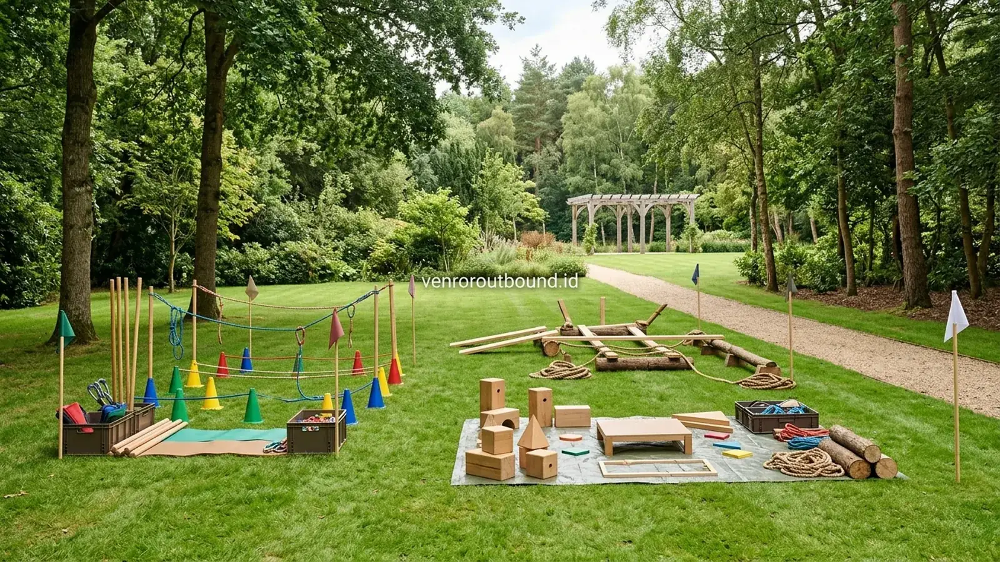

Apa yang Dimaksud dengan Onboarding Outdoor?
Jawaban singkat: Program onboarding outdoor dapat terasa lebih berkesan dibandingkan presentasi kelas ketika tujuan program membutuhkan interaksi dan pengalaman langsung. Pendekatan experiential learning membuat peserta tidak hanya menerima informasi, tetapi juga menjalani simulasi kolaborasi yang dapat dikaitkan dengan tantangan kerja. Namun, presentasi kelas tetap berguna untuk materi teoritis, informasi kebijakan, dan penjelasan administratif.
Dalam lanskap manajemen sumber daya manusia modern, para profesional Learning and Development (L&D) serta HR Manager terus mengevaluasi efektivitas program pengenalan karyawan baru. Onboarding outdoor merujuk pada format orientasi yang diselenggarakan di lingkungan alam terbuka, memanfaatkan sarana taman, lapangan rumput resort, atau arena perkemahan untuk memfasilitasi dinamika kelompok terstruktur.
Karakteristik mendasar dari orientasi luar ruangan ini bertumpu pada unsur gerak, interaktivitas langsung, kerja sama tim, dan perenungan (reflection). Peserta tidak sekadar duduk pasif menyimak pemateri, melainkan terlibat langsung sebagai aktor dalam memecahkan skenario masalah. Meskipun demikian, membandingkan efektivitas orientasi outdoor dengan presentasi kelas membutuhkan perspektif yang berimbang dan objektif, sebab kedua pendekatan tersebut memiliki sasaran pedagogis yang berbeda.
Mengenal Prinsip Experiential Learning dalam Orientasi Karyawan
Mengapa aktivitas di luar ruangan kerap meninggalkan kesan emosional yang lebih membekas bagi karyawan baru? Jawabannya berakar pada teori experiential learning yang dipopulerkan oleh David Kolb. Pembelajaran orang dewasa terjadi secara optimal ketika melalui empat tahapan siklus berkesinambungan:
- Pengalaman Nyata (Concrete Experience): Peserta terjun langsung menghadapi tantangan di lapangan tanpa instruksi kaku.
- Observasi Reflektif (Reflective Observation): Peserta mengamati apa yang berhasil dan apa yang gagal dalam usaha kelompok mereka.
- Konseptualisasi Abstrak (Abstract Conceptualization): Peserta menarik benang merah prinsip kerja sama yang dapat diterapkan secara universal.
- Eksperimentasi Aktif (Active Experimentation): Peserta mencoba strategi baru pada simulasi berikutnya atau dalam lingkungan kerja harian.
Saat tubuh bergerak di udara segar pegunungan, sirkulasi oksigen meningkat dan kadar hormon stres menurun. Suasana santai namun terfokus ini merangsang daya ingat episodik, sehingga nilai-nilai yang dipelajari selama permainan lebih mudah diingat kembali saat karyawan menghadapi situasi kerja nyata di kantor.

Mempercepat Onboarding Karyawan Baru Lewat Simulasi Budaya Kerja Interaktif
Panduan praktis menyusun skenario permainan luar ruangan yang mencerminkan core values perusahaan.
Bagaimana Onboarding Outdoor Berbeda dari Presentasi Kelas?
Untuk membantu tim HR dan manajemen mengambil keputusan yang objektif, tabel berikut menyajikan matriks perbandingan komprehensif tanpa memberikan skor atau pemeringkatan sepihak:
| Aspek Evaluasi | Onboarding Outdoor | Presentasi Kelas |
|---|---|---|
| Metode Pembelajaran | Pengalaman langsung (experiential learning) dan simulasi perilaku. | Penyampaian informasi terstruktur (ceramah, slide, dokumen). |
| Tingkat Interaksi | Tinggi, bergantung pada desain aktivitas dan keterlibatan kelompok. | Dapat bervariasi, umumnya didominasi komunikasi satu atau dua arah terbatas. |
| Aktivitas Fisik | Umumnya ada gerak fisik ringan hingga sedang di area terbuka. | Umumnya rendah, peserta duduk di ruang pertemuan ber-AC. |
| Simulasi Perilaku | Dapat digunakan untuk mempraktikkan respon terhadap rintangan nyata. | Terbatas pada studi kasus verbal atau diskusi meja kelompok kecil. |
| Sesi Refleksi (Debrief) | Menjadi bagian integral yang wajib dipandu fasilitator pascaaktivitas. | Dapat dilakukan melalui sesi tanya jawab atau kuis evaluasi materi. |
| Materi Administratif & SOP | Tetap membutuhkan sesi khusus terpisah atau panduan tertulis. | Sangat cocok untuk penjelasan regulasi, kontrak, dan kepatuhan hukum. |
| Penguatan Kolaborasi | Disimulasikan secara langsung lewat tantangan peran yang saling bergantung. | Dapat didiskusikan secara konsep melalui pemaparan nilai-nilai kerja sama. |

Kapan Program Onboarding Outdoor Lebih Relevan Digunakan?
Penyelenggaraan outbound onboarding perusahaan menjadi sangat relevan dan memberikan nilai tambah optimal apabila agenda orientasi memiliki sasaran-sasaran berikut:
- Memperkenalkan dan Menginternalisasi Budaya Kerja: Menjadikan nilai-nilai abstrak seperti respect, agility, dan customer-centric menjadi tindakan terukur dalam skenario kelompok.
- Mencairkan Sekat Antargenerasi dan Antaralmamater: Menghilangkan kecanggungan antarkaryawan baru yang berasal dari berbagai latar belakang pendidikan dan daerah asal.
- Membangun Fondasi Komunikasi Terbuka: Membiasakan peserta untuk berani menyampaikan ide, mendengarkan kritik secara konstruktif, dan mengonfirmasi instruksi kerja tanpa rasa sungkan.
- Observasi Gaya Kepemimpinan Alami: Memberikan ruang bagi manajer HR untuk mengamati bagaimana talenta baru mengambil inisiatif saat menghadapi ketidakpastian.
Untuk kebutuhan pelatihan kerja sama tim yang intensif, Anda dapat meninjau rincian modul pada Paket Team Building Perusahaan kami yang dirancang fleksibel untuk kebutuhan orientasi korporat.
Kapan Presentasi Kelas Tetap Menjadi Kebutuhan Mutlak?
Kendati aktivitas luar ruangan sangat efektif membangun ikatan emosional, sesi presentasi kelas di dalam ruangan tetap merupakan pilar yang tidak boleh ditinggalkan. Topik-topik yang wajib disampaikan di ruang kelas meliputi:
- Kepatuhan Hukum dan Regulasi Ketenagakerjaan: Penandatanganan perjanjian kerja bersama (PKB), penjelasan kode etik perusahaan, kebijakan anti-pelecehan, dan regulasi kerahasiaan data (NDA).
- Sistem Kompensasi dan Fasilitas Karyawan: Mekanisme klaim asuransi kesehatan, hak cuti tahunan, skema lembur, dan penjelasan struktur remunerasi.
- Standard Operating Procedure (SOP) Teknis: Pengenalan perangkat lunak internal (ERP, CRM, email korporat), protokol keamanan siber, dan alur pelaporan pekerjaan administratif.
Mencoba memaksakan penyampaian materi kepatuhan hukum di lapangan terbuka justru berisiko mengurangi konsentrasi peserta terhadap rincian pasal-pasal penting.

Paket Outbound Onboarding & Corporate Culture Alignment Terpercaya
Spesifikasi fasilitas akomodasi, katering, sarana meeting indoor, dan simulasi lapangan untuk orientasi karyawan.
Apakah Keduanya Dapat Digabungkan? Solusi Blended Onboarding
Pendekatan paling efektif yang banyak diadopsi oleh korporasi terkemuka adalah menggabungkan kedua metode tersebut menjadi satu rangkaian terintegrasi yang disebut Blended Onboarding. Dengan membagi waktu secara proporsional, peserta mendapatkan kejelasan regulasi sekaligus kehangatan pengalaman emosional.
Contoh alur implementasi orientasi satu hari terpadu:
- Sesi Pagi (08.30 – 11.30 WIB / Ruang Meeting Indoor): Pemaparan visi misi organisasi oleh direksi, penjelasan kebijakan HR, pembagian buku pedoman karyawan, dan sesi tanya jawab regulasi.
- Istirahat & Santap Siang (11.30 – 13.00 WIB): Makan siang santai untuk mulai mengakrabkan peserta dengan jajaran fasilitator dan panitia.
- Sesi Siang (13.00 – 16.00 WIB / Lapangan Outdoor): Rangkaian simulasi team building yang menantang peserta mempraktikkan kolaborasi, komunikasi tanpa asumsi, dan kepemimpinan adaptif.
- Sesi Refleksi & Komitmen (16.00 – 17.00 WIB / Pendopo Semi-Outdoor): Sesi debrief menyeluruh yang merumuskan bagaimana pengalaman lapangan hari itu akan diterapkan dalam pekerjaan sehari-hari di kantor.

Membangun Harmoni & Hubungan Erat Tim: Tips Gathering Berkesan
Strategi merancang agenda kebersamaan yang cair tanpa kecanggungan struktural di alam pegunungan Jawa Timur.
Bagaimana Mengukur Hasil Program Onboarding?
Evaluasi keberhasilan program orientasi perlu dilakukan secara berkelanjutan melalui beberapa instrumen pengamatan yang terukur:
- Survei Umpan Balik Sesaat (Post-Event Reaction): Mengukur persepsi peserta terhadap kejelasan materi, relevansi simulasi, dan kenyamanan lingkungan belajar.
- Observasi Perilaku Selama Masa Percobaan (Probation Monitoring): Mengamati apakah nilai-nilai kerja sama dan inisiatif komunikasi yang terlatih saat outbound benar-benar tercermin dalam rutinitas kerja harian.
- Tinjauan 30-60-90 Hari: Melakukan wawancara berkala antara manajer lini dengan karyawan baru untuk mengevaluasi kelancaran adaptasi budaya dan hubungan antarrekan satu divisi.
Ciptakan Kesan Pertama Luar Biasa Bagi Karyawan Baru Anda
Rancang program blended onboarding yang memadukan sesi kelas profesional dengan simulasi outdoor yang berkesan. Hubungi tim Vendor Outbound di +62 82211221909 untuk konsultasi konsep dan jadwal pelaksanaan.
Hubungi Kami via WhatsAppKesimpulan
Memilih antara onboarding outdoor atau presentasi kelas bukanlah persoalan menentukan metode mana yang mutlak lebih unggul, melainkan bagaimana menyelaraskan format pembelajaran dengan tujuan yang ingin dicapai. Presentasi kelas memberikan pondasi kepatuhan hukum dan kejelasan administratif yang mutlak diperlukan, sementara simulasi outdoor menyuntikkan energi interaksi dan kelekatan emosional yang mempercepat penyerapan budaya kerja. Dengan mengintegrasikan keduanya secara harmonis, perusahaan Anda dapat memberikan sambutan terbaik yang menginspirasi komitmen kerja jangka panjang bagi setiap talenta baru.
Pertanyaan Sering Diajukan (FAQ)

Arby Ardiansyah
Praktisi pengembangan SDM dan perancang program experiential learning dengan pengalaman memfasilitasi berbagai kegiatan outbound korporat, team building, dan orientasi budaya kerja karyawan baru di seluruh Jawa Timur.